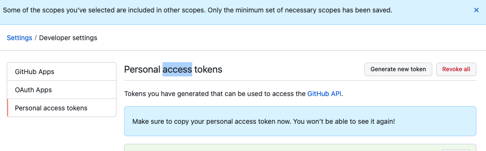

git init
==> Initialized empty Git repository in /Users/sk/Documents/,,,
git remote add origin https://github.com/github_id/repository_name.git
git pull origin master
git config --global user.name "name"
git config --global user.email "email"
git reset HEAD^ // 커밋한 것 중에서 마지막 1개 취소
setting - Developer settings - Personal access tokens - Generater new token : 1번 만들고 아래쪽 Key값 별도 저장 필요
